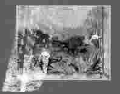

窗 帘
●杨 绛
人不怕挤。不论怎样挤，挤不到一处，像壳里的仁，各自各；像太阳里飞舞的轻尘，各自各。凭你多热闹的地方，窗对着窗，各自人家，彼此不相干。只要挂上一个窗帘，只要拉过那薄薄一层，便把人家隔离在千万里以外了。
隔离，不是断绝。窗帘并不堵没窗户，只在彼此间增加些距离——欺哄人、招引人的距离。窗帘并不盖没窗户，只隐约遮掩——多么引诱挑逗的遮掩！所以，光秃秃赤裸裸的窗口，不引起任何注意；而一角掀动的窗帘，惹人窥望测度，生出无限兴趣。
光秃秃赤裸裸，当然表示天真朴素。何必这样虚伪，遮遮掩掩的不老实！逢人只说三分话！就不能一见倾心，肝胆相照？可是，开口见喉咙，未免浅显。有乖巧的人，把天真朴素，做了窗帘的质料，做了窗帘的颜色。一个洁白素净的帘子，堆叠着的透明的软纱，在风里飘曳。这种朴素，只怕比五颜六色更经得起人为的漂洗。认真要赤裸裸不假遮饰，除非有希腊女神那么完美的身子，有天使般纯洁的灵魂。培根说过：“赤裸裸是不体面的。不论是裸露的身体，还是裸露的心。”人从乐园里被驱逐出来的时候，已经体味到这句话了。
便是最赤裸裸的真理，也需要一些衬托装饰。白昼的阳光，无情照彻了人间万物，不留下些暗陬让人迷惑，让人梦想，让人希望。没有轻云薄雾，把日光筛漏出五色霞彩来，天上该多么寂寞荒凉！
隐约模糊中，才容许你做梦和想象。距离增添了神秘。看不见边际，变为没边际的遐远与辽阔。云雾中的山水，暗夜的星辰，希望中的未来，高超的理想，意中的情人，新交的朋友——隔着窗帘，怅惘迷离，相看一眼，越加添了想望。偶然目逆，给你无限欣喜。每一个试探是冒险，每一个发现是惊奇。伟大，伟大！陶醉迷恋中，也忘却了自己帘后的狭小与简陋。
这时候，你掀起了窗帘。后面，有什么？赤裸裸的真实！像泰尼生诗中的夏洛脱女郎，看厌了镜中反映的天地，三步跑到窗前，望一望外面的世界。立刻，她的镜子分裂成两半，她毁灭了以前快乐而无知的自己。悄悄地放下窗帘，失望而悲哀。
可是，失去的只是一个迷梦。有时也能换到窗帘后面的安静和休息，不论那间屋子多么简陋狭小。
(紫檀木摘自《精致小品》，Gettyimages供图)